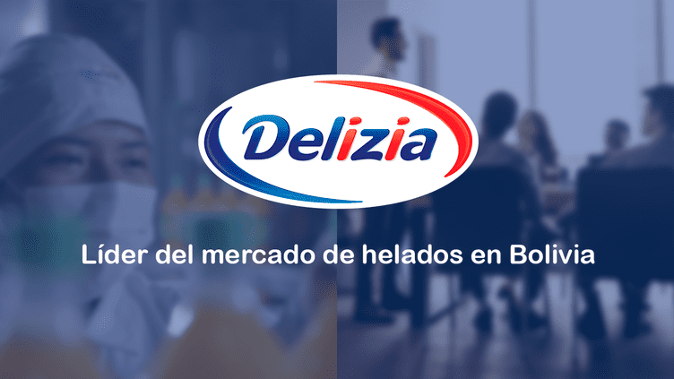

Nuestra Historia

Fundadores de DELIZIA en sus inicios (1988)
Desde 1988 elaboramos productos lácteos con amor y tradición. La empresa Delizia, líder en la producción y venta de helados en Bolivia, fue fundada en 1988 en La Paz por un matrimonio que trabajaba como distribuidores de yogur. Iniciaron con la fabricación de helados de agua llamados "bolo" y con el tiempo se expandieron a otros productos lácteos y bebidas. Actualmente, Delizia cuenta con plantas en La Paz y Santa Cruz y genera miles de empleos directos e indirectos.